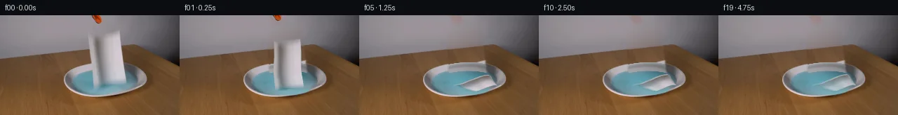

![首帧]()

Round 00
2026-11-05T13:47:18.430774+00:00像素候选变化代码 +223/−0inspection 更新
pixels 04f93670e5f26fc2 · code b9d6dd1392566872
查看本轮 generate.py 真实 diff
--- previous/generate.py
+++ current/generate.py
@@ -0,0 +1,223 @@
+"""Local source-image reconstruction and a deforming textured paper mesh."""
+from pathlib import Path
+import numpy as np
+from PIL import Image, ImageDraw
+import cv2
+from scipy.interpolate import PchipInterpolator
+from scipy.ndimage import gaussian_filter
+from artifact_io import save
+
+ROOT=Path(__file__).resolve().parent
+SRC=np.array(Image.open(ROOT/'first_frame.png').convert('RGB'))
+H,W=SRC.shape[:2]
+YY,XX=np.mgrid[:H,:W].astype(float)
+S=4
+rng=np.random.default_rng(127)
+
+def polygon_mask(points):
+ a=np.zeros((H,W),np.uint8)
+ cv2.fillPoly(a,[np.round(points).astype(np.int32)],255)
+ return a
+
+# The hidden wall, table and bowl are reconstructed only around the old paper.
+PAPER=np.array([[126,25],[134,28],[171,20],[181,102],[175,106],[134,111],[129,75]])
+remove=polygon_mask(PAPER)
+remove=cv2.dilate(remove,np.ones((5,5),np.uint8))
+old_shadow=((XX-153)/34)**2+((YY-104)/11)**2<1
+remove[old_shadow]=255
+alpha=gaussian_filter(remove.astype(float)/255,1.05)
+qx=XX-150.5
+qy=YY-93.5+.035*qx
+outer=(qx/59.3)**2+(qy/26.2)**2
+wx=XX-151
+wy=YY-98+.035*wx
+water=(wx/49.1)**2+(wy/18.1)**2
+# Smooth wall illumination fitted from unoccluded local gray-wall pixels.
+wall_region=(YY<42)&(XX>92)&(XX<207)&(remove==0)
+features=np.stack([np.ones_like(XX),XX/256,YY/144,(XX/256)**2,(YY/144)**2,XX*YY/(256*144)],-1)
+wall_coef=np.linalg.lstsq(features[wall_region],SRC[wall_region].astype(float),rcond=None)[0]
+wall=features@wall_coef
+# Table grain is translated from a nearby part of the same tabletop.
+table=cv2.remap(SRC,(XX-57).astype(np.float32),(YY+6.4).astype(np.float32),cv2.INTER_LINEAR,borderMode=cv2.BORDER_REFLECT).astype(float)
+base=wall.copy()
+boundary=62.2-.106*XX
+b=1/(1+np.exp(np.clip(-(YY-boundary)*3,-60,60)))
+base=base*(1-b[...,None])+table*b[...,None]
+# Restore the ceramic back rim using its elliptical shape and local lighting.
+rad=np.sqrt(np.maximum(outer,0))
+rim_gray=169-0.54*(XX-120)+.24*(YY-77)
+rim_gray-=24*np.exp(-((rad-.82)/.09)**2)
+rim_gray+=12*np.exp(-((rad-.975)/.032)**2)
+rim=np.stack([rim_gray*1.015,rim_gray*1.006,rim_gray*1.025],-1)
+outer_a=np.clip((1-outer)*38,0,1)
+base=base*(1-outer_a[...,None])+rim*outer_a[...,None]
+# Fit the liquid from the visible portions, excluding the towel and its shadow.
+known=(water<.91)&(remove==0)&((XX<125)|(XX>188)|(YY>113))
+liquid_coef=np.linalg.lstsq(features[known],SRC[known].astype(float),rcond=None)[0]
+liquid=features@liquid_coef
+liquid=np.clip(liquid,[65,113,127],[121,173,187])
+water_a=np.clip((1-water)*24,0,1)
+base=base*(1-water_a[...,None])+liquid*water_a[...,None]
+BG=SRC.astype(float)*(1-alpha[...,None])+base*alpha[...,None]
+# Remove grabber only when it retracts; the tip itself is copied from the input.
+toolmask=polygon_mask([[129,0],[144,0],[146,9],[142,13],[135,11],[130,4]])
+toolalpha=gaussian_filter(toolmask.astype(float)/255,.35)
+BG_TOOL=BG*(1-toolalpha[...,None])+wall*toolalpha[...,None]
+
+# A texture from the real towel: source coordinates follow the visible fold.
+TW,TH=180,310
+U,V=np.meshgrid(np.linspace(0,1,TW),np.linspace(0,1,TH))
+# v=0 is the lower end, v=1 the upper end.
+sx=(1-V)*(135.2+43.7*U)+V*(126.8+43.0*U)
+sy=(1-V)*(107.7-6.6*U)+V*(27.0-5.1*U+4.8*np.exp(-((U-.22)/.17)**2))
+texture=cv2.remap(SRC,sx.astype(np.float32),sy.astype(np.float32),cv2.INTER_CUBIC,borderMode=cv2.BORDER_REFLECT).astype(float)
+# Keep boundary colors inside the sheet, avoiding water/background bleed.
+texture[:3]=texture[3:4]
+texture[-3:]=texture[-4:-3]
+texture[:,:2]=texture[:,2:3]
+texture[:,-2:]=texture[:,-3:-2]
+tex_grain=rng.normal(0,.48,(TH,TW))
+texture=np.clip(texture+tex_grain[...,None],0,255)
+
+VS=np.array([0,.25,.5,.75,1.])
+# Each pair is the projected center of one lengthwise cross-section.
+poses=[
+[[157,104.5],[154.8,85.2],[152.5,65.8],[150.2,46.3],[148,27]],
+[[157,108.2],[155.3,95],[153.5,78],[154,56],[153,35.5]],
+[[155,108.8],[151,97],[155,83],[163,69],[173,53]],
… diff truncated; 136 more lines …